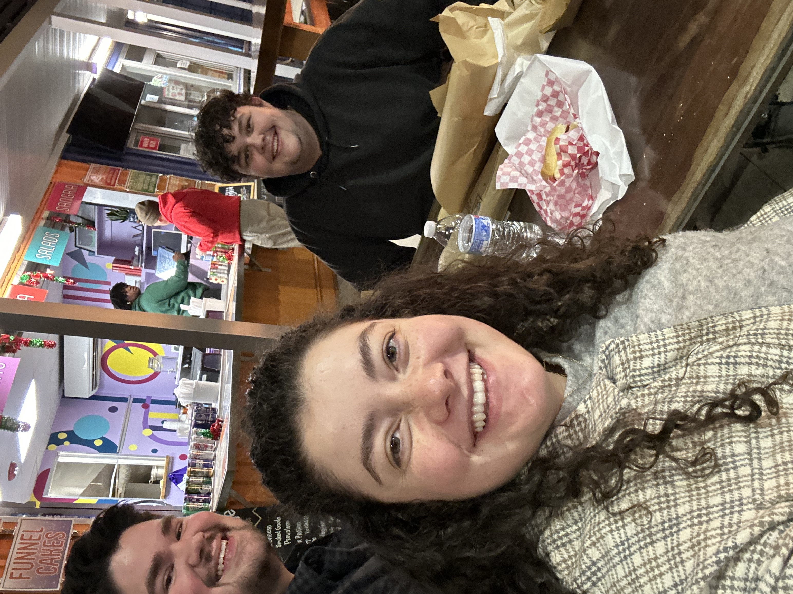

Tyler Ferguson | WDD130 Project

I am a CIT major and a Junior here at BYU I. I am from Atlanta Georgia. I served a Spanish Speaking mission in Los Angeles California. I am excited to learn the basics in this class so I could work on potential side projects that I have. I have been a member the church my entire life.